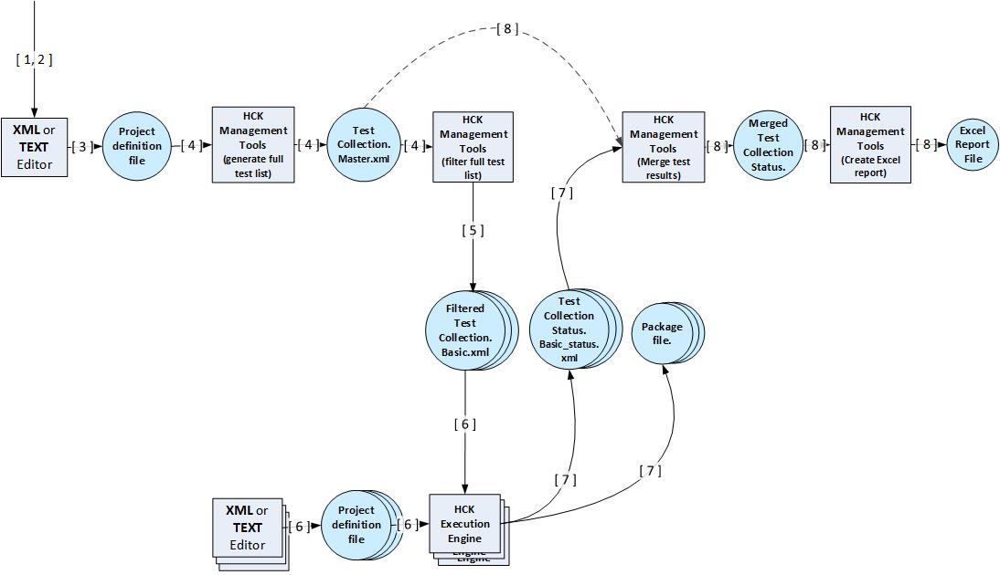
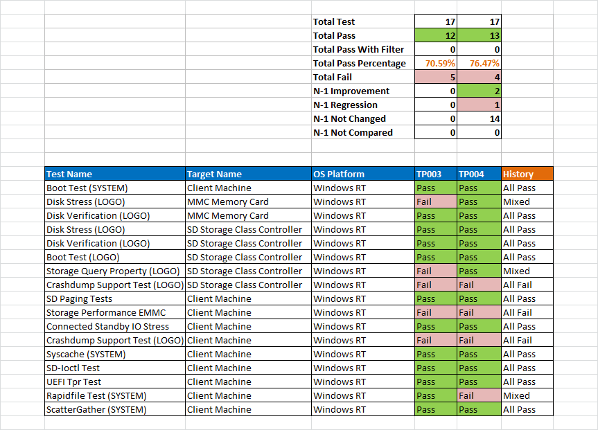

HCK Automation Tool
The automating the Windows Hardware Certification Kit (Windows HCK) topic guides you through a series of scripting-supported steps to automate Windows HCK driver, system, and software device testing. This allows you to run the Windows HCK tests without using the Windows HCK user interface (UI).
|
|
|---|
| There is a known issue with the Windows HCK execution engine. When a test has halted or the system has stopped a machine and the Windows HCK ObjectModel interprets the test as still running, the Windows HCK execution engine does not recognize the condition and can continue to monitor the test execution indefinitely (or until the timeout value of the project is reached). The root cause for this issue is that Windows HCK execution engine gets the test result from the Windows HCK ObjectModel; in this case, it therefore thinks that the test is still running and does not start the machine monitor to wait for recovery. We recommend that you manually cancel the job and reboot the machine to alert ObjectModel. You might need to rerun the failed/cancelled test by using a shortended test collection file, or run it manually by using Windows HCK Studio. This issue will be addressed in future releases. |
The process for running the Windows HCK tests in a series of scripted steps follows a workflow that is similar to the Windows HCK Getting Started Guide.
The individual steps are as follows:
-
Windows HCK automation tools prerequisites
-
Step 1: Install Controller and supporting programs on the test server
-
Step 2: Install HCK Client on the test computer(s)
-
Step 3: Create a test Project Definition File on the Controller or test server
-
Step 4: Generate the full list of tests based on the Project Definition File on the Controller or test server
-
Step 5: Filter the full list of tests on the Controller
-
Step 6: Add filtered list of tests to the Project Definition File on the Controller
-
Step 7: Run the test project on the Controller
-
Step 8: Analyze the test results in Excel
-
PDEF reference
Windows HCK automation tools prerequisites
Before you begin testing, make sure that you are familiar with the Windows HCK automation concepts and hardware requirements. See Windows HCK Prerequisites.
Step 1: Install Controller and supporting programs on the test server
The test server computer should be installed with an operating system and configured as described in Windows HCK Prerequisites. You can then install the following programs:
-
Windows HCK. For detailed instructions about how to install the Windows HCK, see Step 1: Install Controller and Studio on the test server.
-
Windows PowerShell 3.0. See KB2506143.
-
Microsoft Excel (Excel 2007, Excel 2010, or Excel 2013).
-
Office Primary Interop Assemblies for Windows XP.
 Important
Important This specific version is required to export Excel. -
Download and copy office.dll and Microsoft.Office.Interop.Excel.dll to %WTTSTDIO%. Use these programs to support Step 8: Analyze the test results in Excel.
To verify the successful installation of the Windows HCK Controller software, check for the following programs in C:\Program Files (x86)\Windows Kits\8.1\Hardware Certification Kit\Studio on the test server:
-
hckexecutionengine.exe
-
Microsoft.Windows.Kits.Hardware.Certification.Management.dll
-
Microsoft.Windows.Kits.Hardware.Certification.Project.dll
-
Microsoft.Windows.Kits.Hardware.Certification.Testcollection.dll
To verify the successful installation of Windows PowerShell 3.0, do the following:
Verify Windows PowerShell 3.0
-
To open a Windows PowerShell 3.0 session, x86 version on a computer that is running Windows® 7, click Start, click All Programs, click Accessories, click Windows PowerShell, right-click Windows PowerShell (x86), and then click Run as administrator.
To open a Windows PowerShell 3.0 session, x86 version on a computer that is running Windows® 8 or Windows Server® 2012, follow the instructions at Starting the 32-Bit Version of Windows PowerShell.
-
Type
Get-Command -Module HardwareCertificationto see the following list of Windows HCK automation cmdlets:-
Export-HwCertTestCollectionToXml
-
Import-HwCertTestCollectionFromXml
-
Merge-HwCertTestCollectionFromHckx
-
Merge-HwCertTestCollectionFromXm
-
New-HwCertTestCollectionExcelReport
-
New-HwCertTestCollection
-
New-HwCertProjectDefinitionFile
-
Export-HwCertTestCollectionToXml
-
You can optionally set debug message output with automatic continuation by using the following command:
$DebugPreference = "Continue";
Step 2: Install HCK Client on the test computer(s)
To install the HCK client on a test computer, follow the instructions from the Windows HCK Users Guide Getting Started document, Step 2: Install Client on the test computer(s).
|
|
|---|
| When you install Windows HCK Client software on a computer, the computer is automatically added into the Windows HCK Controller Default Pool. The Default Pool is only supported in the Project Definition File that you define in the next steps. To locate the Hardware ID or Device Class of the testing device from the Device Manager of each test computer, see Discovering Hardware IDs and Device Setup Classes for your Devices. |
Step 3: Create a test Project Definition File on the Controller or test server
Project Definition File (also referred as PDEF) defines the Target- and Machine-specific part of the testing project. The Test and Result-specific part is defined in the Test Collection File. Together, these files fully describe the project configuration, scope and results.
For a description of the PDEF file format and auxiliary PDEF information, see PDEF reference.
An example test Project Definition File, called C:\Temp\DefinitionFile\device-win8client-x64-auto.xml is shown here:
<ProjectDefinitionData Controller="controllername" Database="DTMJobs" Timeout="120" User="user"> <Project Name="Project-win8client-x64"> <SchedulerType>AdaptiveOrderOptimized</SchedulerType> <MultiDeviceTestGroup>true</MultiDeviceTestGroup> <TestStatusToSkip>Pass</TestStatusToSkip> <Product Name="Product-win8client-x64" OsPlatform="Windows 8 Client x64" MachinePool="Test"> <Family Name="Family-win8client-x64"> <Target TargetType="Device" Id="HWID"/> </Family> <Machine Name="TEST-CLIENT-A" Role="SUT"/> <Machine Name="TEST-CLIENT-B" Role="SUT"/> </Product> <Packages Path="C:\temp"/> </Project> </ProjectDefinitionData>
The following tables define child elements and the attributes, grouped by the XML node in which they should be set.
Project
| Xml | Name | Description |
|---|---|---|
|
Attribute |
Name |
User-specified friendly name of the project. |
|
Attribute |
Controller |
Name of the Controller. |
|
Attribute |
Database |
Fixed name of the Controller database (for example, DTMJobs). |
|
Attribute |
Timeout |
The time the execution tool will monitor for activity, expressed in hours. If the test pass runs longer than this value, the tool will stop all testing. |
|
Element |
SchedulerType |
Optional enumeration value that is used for scheduling tests, to define the scheduling mode for the Execution Engine. Valid values are the following:
|
|
Element |
MultiDeviceTestGroup |
Boolean flag, set to TRUE to enable multi-device testing. |
|
Element |
TestStatusToSkip |
Optional enumeration value that is used to define the skipping mode for the Execution Engine when scheduling tests. Valid values are Pass, Fail, or NoData. |
|
Element |
Product |
The product for this project. There should be only one entry. |
|
Element |
Package |
The path to which the HCKX package for this project should be saved. |
Product
| Xml | Name | Description |
|---|---|---|
|
Attribute |
Name |
Friendly name of the product you test. |
|
Attribute |
OSPlatform |
Version of Windows for the product. All computers that are specified for this product that are running different versions of Windows will be ignored. |
|
Attribute |
MachinePool |
Machine pool that contains the test computers that are specified for the product under test. This is an optional parameter. If it is not specified, the default machine pool is used. If a machine pool is specified, it must refer to an existing machine pool. This parameter works together with the Machine parameter. If the MachinePool parameter is specified but no Machine parameter is specified, the test runs on all computers in the specified machine pool. |
|
Element |
Family |
A set of target families that belongs to this product. |
|
Element |
Machine |
One or more machines that will be used for testing. If this parameter is empty, all machines in the specified pool are matched and used for testing. |
Family
| Xml | Name | Description |
|---|---|---|
|
Attribute |
Name |
Friendly name of the Target Family of Targets that you test in the project. |
|
Element |
Target |
A set of targets that belongs to this family. target is device or driver that can be selected for testing. |
Target
| Xml | Name | Description |
|---|---|---|
|
Attribute |
TargetType |
Type of Target. Valid values are Device, System, and TargetCollection. |
|
Attribute |
Id |
Unique identifier of Target. For example, with the TargetType parameter set to the value, Device, the Id will be set to Hardware Id, HWID. If TargetType is set to the value System, the value for Id will be ignored. |
|
Element |
ManualSelectFeature |
Specifies a manually added feature. |
Machine
| Xml | Name | Description |
|---|---|---|
|
Attribute |
Name |
Name of the test computer. This is an optional parameter. If Machine Name is specified:
|
|
Attribute |
Role |
If the computer is a system under test (SUT), this attribute should be specified as SUT. If the computer is a secondary client that is used for multi-computer testing, the attribute should be specified as CLIENT. Not specifying this attribute will default to this computer being a system under test (SUT). |
Package
| Xml | Name | Description |
|---|---|---|
|
Attribute |
Path |
Folder for the submission packages that are generated at project execution. |
Generating the Project Definition File
You can create the PDEF by using any xml or text editor, or by using the management tool New-HwCertProjectDefinitionFile cmdlet. If you use the management tool cmdlet, you can generate a PDEF that has the restrictions listed below. You can manually or programmatically update the generated PDEF xml by using any changes that are valid against the PDEF file schema.
-
The generated PDEF can only have a single <Project> element and a single <Product> element for the project.
-
The <Path> attribute of the <Packages> element must be empty or set to the [PACKAGES] token.
-
The <TestCollectionStatusLocation> attribute of the <Project> element must be set to an empty string.
-
The <SchedulerType> element must be set to AdaptiveResourceOptimized.
-
The <OsPlatform> attribute of the <Product> element must be set to the OSPlatform value that is derived from the first machine in the specified pool for this project.
Parameters of the New- HwCertProjectDefinitionFile cmdlet are described below:
-
OutputAutomatedPdef – a Boolean flag that handles the automatic generation of the following PDEF xml attributes:
-
<Controller> = “[MACHINE]
-
<TestCollectionReadLocation> = “[FILTERED_TEST_COLLECTION]
-
<Path> = “[PACKAGES]”
-
<Controller> = “[MACHINE]
-
TestCollectionFilePath – the full path to the test collection xml file that is stored in the <TestCollectionReadLocation> attribute of the <Project> element in the PDEF xml. If this value and OutputAutomatedPdef are not provided, the path is set to an empty string.
-
ControllerName – the name of the controller that is stored in the <Controller> attribute of the <ProjectDefinitionData> element of the PDEF xml. If this value and OutputAutomatedPdef are not provided, the controller name is set to name of the current machine.
-
PdefFilePath – the name of the output PDEF xml file. If not provided, the path is auto-generated with the following format:
%userprofile%\\desktop\\PDEF_Files\\PDEF_{time_date}\\PDEF_{os_platform_name}_{time_date}.xml - ProjectName – the name of the project that is stored in the <Name> attribute of the <Project> element in the PDEF xml. If not provided, the name is auto-generated using the current date time stamp value.
-
EnableMultiDeviceTest – a Boolean flag that handles the multi-device scheduling for the project, stored in the <MultiDeviceTestGroup> element in the PDEF xml. If not specified, multi-device scheduling is not enabled.
-
SkipTestStatus – the skipping mode for scheduling tests, stored in the <TestStatusToSkip> element in the PDEF xml. Valid values are Pass, Fail, and NoData. If not provided, the default skipping mode is Pass.
-
EnableIsolateTargets – a Boolean flag that enables creation of an individual device family for each discovered target. If not specified, targets are grouped into the families by device classes.
The following two parameters specify the machine pool for the project. You must provide only one parameter. If you do not provide a parameter, or if you provide both parameters, you will get an error.
-
MachineList – specify machine names in a comma-delimited list. All specified machines must be in the same existing pool or in the default pool.
-
MachinePool – the name of the existing machine pool.
The following six parameters specify the type of the targets for the project. You must provide only one parameter. If you do not provide a parameter, or if you provide multiple parameters, you will get an error.
-
RunSystemTest – the project is for testing the whole system. One target family with a single TargetType = System is generated.
-
TestAllDevices – the project is for testing all targets discovered on the specified machines.
-
HwIdList – specify target hardware IDs in a comma-delimited list. Each hardware ID in the list can be partially-specified. In this case, the matching hardware IDs are identified by using the partially-specified value as a sub-string with respect to the hardware ID format. Strings are compared as case-insensitive ASCII.
-
DriverList – specify names of target drivers in a comma-delimited list. UMDF Drivers (.DLL) are not currently supported. These devices can still be discovered by using their HWID, as part of the Windows Device Class GUID, or all targets.
-
ContainerIdList – specify container ID values in a comma-delimited list. Each container Id value must be in GUID format.
-
ClassIdList – specify class ID values in a comma-delimited list. Each class ID value must be in GUID format.
Step 4: Generate the full list of tests based on the Project Definition File on the Controller or test server
You can use the Management Tool cmdlet, New-HwCertTestCollection, to generate the full list of tests that are required for testing targets in the project. An example of how to use the Management Tool cmdlet in the Windows Powershell session, is shown below. (This step is optional.)
New-HwCertTestCollection -ProjectDefinitionFile C:\Temp\DefinitionFile\device-win8client-x64-auto.xml | Export-HwCertTestCollectionToXml -Output c:\temp\master.xml -TestPassIdentifier “TP001”
If a target that is specified in the Project Definition File is no longer available, you will receive a warning and the test collection generation continues. In this case, we recommend the following to get the full list of tests:
-
Create an auxiliary copy of Project Definition File that holds only those targets that were not available. Because tests list generation time depends on the number of specified targets, we strongly recommend that you keep only those targets that were not available at the previous run in the auxiliary copy.
-
Fix the problem that caused the targets being not available; for example, certain machines in the pool are not in READY state.
-
Generate an auxiliary list of tests by using the auxiliary copy of the Project Definition File.
-
Merge the initial and auxiliary lists of tests. You can do this manually by adding <TestCollectionRecord> elements from the auxiliary list to the initial list.
An example of the generated output xml file (c:\temp\master.xml) is given below.
<?xml version="1.0" ?> <ArrayOfTestCollectionRecord xmlns:xsi="http://www.w3.org/2001/XMLSchema-instance" mlns:xsd="http://www.w3.org/2001/XMLSchema"> <TestCollectionRecord Name="Disk Stress (LOGO)" Guid="738735f7-245a-4b39-9d81-20339ce31fd4" TargetName="Disk" TargetId="DiskId" TargetType="Device" HckBuildVersion="8.100.9354.9354" TestPassIdentifier="TP001" OsPlatform="Windows 8 Client x64"> <ContentLevelSet>Reliability</ContentLevelSet> <ContentLevelSet>Certification</ContentLevelSet> <ScheduleOptionSet>Distributable</ScheduleOptionSet> <ScheduleOptionSet>MultipleDEvices</ScheduleOptionSet> <FeatureMapped>Device.Storage.Hd</FeatureMapped> </TestCollectionRecord> </ArrayOfTestCollectionRecord>
Where the attributes are defined as:
-
TargetId – Hardware Id of the target on the test computer
-
TargetName – friendly name of the Target on the test computer
-
OSPlatform – version of Windows on the test computer for the specified Target
-
Guid – Job ID detected for testing the Target
-
Name – friendly name of the Job detected for testing the Target
-
TestPassIdentifier – string value, identifying the test pass.
-
TargetType – type of the product tested in the project (device, system, or filter)
-
Feature Mapped – feature that detected Job will test for the Target
-
ContentLevelSet – categories of the Job detected for testing the Target
-
ScheduleOptionSet – options for test scheduling. Valid values are:
- Manual – test requires manual actions at execution time
- Distributable – test can be scheduled for multiple computers and run on the first available computer.
- MultipleDevices – test can be run on multiple devices simultaneously on the same computer
- MultipleMachines – test can be scheduled to run on multiple computers with different roles
- SpecialConfiguration – test requires special computer configuration in order to run the test
- Manual – test requires manual actions at execution time
-
HCKBuildVersion – version of HCK that was used to generate the test collection
Step 5: Filter the full list of tests on the Controller
You can use the Management Tool PowerShell cmdlet, Import-HwCertTestCollectionFromXml, to filter the full list of tests by a specified attribute value. (This step is optional.) Any attribute of the generated output xml file, as listed in step 4, can be used for filtering the list. The output test collection test records should be arranged in the required order for scheduling. In the following example, the Basic test category is used for filtering and sorting the master list. Type the following command in a Windows PowerShell session:
Import-HwCertTestCollectionFromXml -Input C:\Temp\master.xml | ? { $_.ContentLevelSet.Contains("Basic") } | sort –Property GUID | Export-HwCertTestCollectionToXml -Output c:\temp\basic.xml
Step 6: Add filtered list of tests to the Project Definition File on the Controller
Use any text or xml editor to update the PDEF to add the location for the test collection input xml file and the location for the output test results. An example of the updated PDEF, C:\Temp\DefinitionFile\device-win8client-x64-auto-basic.xml, is given below.
<ProjectDefinitionData Controller="controllername" Database="DTMJobs" Timeout="120" User="user"> <Project Name="Project-win8client-x64" TestCollectionReadLocation="C:\temp\basic.xml" TestCollectionStatusLocation="basic_collection_status.xml"> <MultiDeviceTestGroup>true</MultiDeviceTestGroup> <TestStatusToSkip>Pass</TestStatusToSkip> <Product Name="Product-win8client-x64" OsPlatform="Windows 8 Client x64" MachinePool="Test"> <Family Name="Family-win8client-x64"> <Target TargetType="Device" Id="HWID"/> </Family> <Machine Name="TEST-CLIENT-A" Role="SUT"/> <Machine Name="TEST-CLIENT-B" Role="SUT"/> </Product> <Packages Path="C:\temp"/> </Project> </ProjectDefinitionData>
Where the attributes are defined as:
-
TestCollectionReadLocation – path to the filtered test collection xml file
-
TestCollectionStatusLocation – path to the output xml file holding testing results
Step 7: Run the test project on the Controller
Run the following from a command line:
hckexecutionengine.exe /Project "C:\Temp\DefinitionFile\device-win8client-x64-auto-basic.xml" /RunCollection
After the command completes, the following files are created:
-
A Package file name.hckx is created for each test run at the location that is specified in the PackagePath attribute as defined in the PDEF (see Step 3: Create a test Project Definition File on the Controller or test server). The Package file name is composed from the Project friendly name and the Data and Time of the project run.
-
The results are presented in an XML file. An example results file (C:\temp\basic_collection_status.xml) is given below.
Where the attributes are defined as:<?xml version="1.0" ?> <ArrayOfTestCollectionRecord xmlns:xsi="http://www.w3.org/2001/XMLSchema-instance" mlns:xsd="http://www.w3.org/2001/XMLSchema"> <TestCollectionRecord Name="Disk Stress (LOGO)" Guid="738735f7-245a-4b39-9d81-20339ce31fd4" TargetName="Disk" TargetId="DiskId" TargetType="Device" HckBuildVersion="8.100.9354.9354" TestPassIdentifier="TP001" OsPlatform="Windows 8 Client x64"> <ContentLevelSet>Reliability</ContentLevelSet> <ContentLevelSet>Certification</ContentLevelSet> <ScheduleOptionSet>Distributable</ScheduleOptionSet> <ScheduleOptionSet>MultipleDEvices</ScheduleOptionSet> <FeatureMapped>Device.Storage.Hd</FeatureMapped> <Result StartTime="2013-03-14T17:59:45.117-07:00" Status="Passed" FiltersAppliedCount="0" SourcePath="TEST-MACHINE-2A" InstanceId="67" FeatureDetected="Device.DevFund.CDA Device.DevFund.DriverFramework.AllDrivers Device.DevFund.DriverFramework.KMDF Device.DevFund.INF Device.DevFund.Memory Device.DevFund.Reliability.Interrupts Device.DevFund.Reliability Device.DevFund.ReliabilityDisk Device.DevFund.Security Device.DevFund.Server Device.Storage.Hd.Iscsi Device.Storage.Hd.MultipleAccess.PersistentReservation Device.Storage.Hd.PersistentReservation Device.Storage.Hd.ScsiProtocol Device.Storage.Hd" /> </TestCollectionRecord> </ArrayOfTestCollectionRecord>
-
StartTime – Data and Time the test run started
-
Status – set to either pass or fail
-
FiltersAppliedCount – number of filters applied to the result log
-
SourcePath – file path to the package .hckx file generated for the project run
-
InstanceID – Device instance ID of the Target on the test computer
-
FeatureDetected – features detected for the tested Target
-
StartTime – Data and Time the test run started
Stopping/restarting test execution
You can stop and restart test runs at any time. Tests that are currently running on client machines will continue to run, but no further tests are scheduled. At most, the number of running tests is equal to the number of available machines, because the scheduling logic will not queue up more tests than available machines. While running tests will continue to execute (and can return test results back to the Windows HCK project), the status xml file that is generated by the Windows HCK Execution Engine tool will not contain the pass/fail value for those tests that were running at the time the process was stopped. Therefore, restarting a project can cause a set of tests to be run twice — one time after the automation tool exited, and one time when the process restarts. Because early termination of the process generally implies that machine state issues need to be investigated, this re-run behavior of the final batch of previously scheduled tests is by design and is generally desired.
Stopping mechanism
You can stop the test process by typing a Ctrl-C command in the console window. The Windows HCK Execution Engine will stop executing new tests and will begin a short cleanup process, such as writing final status to the summary xml file and to the execution engine log.
Restarting mechanism
A basic high-level overview of the process is as follows:
-
Using Windows HCK Studio, create an HCKx package of the project that was running before you stopped the test process.
-
Edit the Windows HCK Execution Engine project definition xml file to supply a new input and output status file.
-
Restart HckExecutionEngine.exe by using the project definition file.
-
Use Windows HCK Studio to merge the two partial HCK projects into a new, complete HCKx file.
-
Runsthe Analyze phase on the compete HCKx file as outlined in the “Subsequent Analyze options” section in this document.
Detailed steps of this process are as follows:
-
To create an HCKx package of the results that were completed prior to test execution being stopped, start Windows HCK Studio.
-
In Windows HCK Studio, double-click the project name of the project that was stopped. The project name is the same as in the project xml file. (The project xml file can be found under C:\Users\LocalAdminUser\Desktop\PDEF_Files, in a time-stamped folder.)
-
In Windows HCK Studio, on the Package tab, click Create Package and save the package.Note
The following step must be performed only if the initial test pass was run by having the client machines starting in the Default Pool. -
Because tests can run only when machines are in a non-Default Pool, and because the Windows HCK Execution Engine does not wait for all currently running tests to complete prior to completing a Ctrl-C operation, all machines will remain in their existing machine pool after Windows HCK Execution Engine stops. If the original project xml file specified machines in the Default Pool, then you must move the client machines back to the Default Pool. You can do this by using the Configuration menu that is located at the top of the Windows HCK Studio UI, or through the Windows HCK Manager application.
-
After the partial HCKx package is generated, you must update the Windows HCK Execution Engine project file to prepare for the remaining run. Navigate to C:\Users\LocalAdminUser\Desktop\PDEF_Files, and find the correct time-stamped folder from the test run. In the set of xml files in the folder, the project xml file is the one that is not preceded with “Status_”, “FTC_”, or “TC_”. In Notepad or other text editor, edit this file as follows:
In the project xml file, two fields must be edited: TestCollectionReadLocation and TestCollectionStatusLocation. For the Windows HCK Execution Engine tool to know where to resume, the previous TestCollectionStatusLocation value (the xml output file of results) must become the input file. Copy the value of TestCollectionStatusLocation to the TestCollectionReadLocation value. Then, set a new TestCollectionStatusLocation value. The TestCollectionStatusLocation value can be any value; for example, “C:\Users\LocalAdminUser\Desktop\PDEF_Files\Rerun.xml”.
Optionally modify the Project node Name value to make the project easier to find in HCK Studio later on. (Because the current Name value has already been used, Windows HCK Execution Engine will create a new project name.) -
To restart the tool, open a new command prompt window by using administrator privileges. Navigate to the Windows HCK Studio directory (%wttstdio%). Type the following command:
This command starts the Windows HCK Execution Engine, which resumes by using the previous set of tests that were running before the tool stopped. Execution can continue until all tests are completed.HckExecutionEngine.exe /Project <project xml file location> /RunCollection
-
After the second set of tests are finished, you must merge the two projects together. To do this, open Windows HCK Studio. Look at the most recent projects that were created – typically the most recent project is from the second execution run that was performed (unless other users are also creating projects during this time). Or, if you changed the project Name value in the project xml file, you can identify the project by the new Name.
-
Double-click the new project that was created from the second run. On the Package tab, click Merge Package. In the Package To Merge dialog, click Add and navigate to the first partial hckx package that was created from the first run of HCK Execution Engine. Click Save and click Create Package in the main window.
Step 8: Analyze the test results in Excel
You can use a Management Tool PowerShell command to generate the aggregated list of test results for the project. You can then analyze the aggregated results in Excel.
There are two ways to aggregate the list of test results for a project.
-
Use the XML-based output files. An example of how you can merge XML-based test results from the Windows PowerShell session that is open on your Controller or test server is shown here:
dir -s "c:\temp\*.xml" | Merge-HwCertTestCollectionFromXml -ValidationXmlPath "C:\temp\master.xml" | Export-HwCertTestCollectionToXml -Output "C:\Temp\merged_1.xml" -TestPassIdentifier “TP003” dir -s "c:\temp\*.xml" | Merge-HwCertTestCollectionFromXml -ValidationXmlPath "C:\temp\master.xml" | Export-HwCertTestCollectionToXml -Output "C:\Temp\merged_2.xml" -TestPassIdentifier “TP004”
-
Use the project .hckx output files. An example of how you can merge .hckx output files from the Windows PowerShell session that is open on your Controller or test server is shown here:
dir -s "c:\temp\*.hckx" | Merge-HwCertTestCollectionFromHckx-ValidationXmlPath "C:\temp\master.xml" | Export-HwCertTestCollectionToXml -Output "C:\Temp\merged_1.xml" -TestPassIdentifier “TP003” dir -s "c:\temp\*.hckx" | Merge-HwCertTestCollectionFromHckx-ValidationXmlPath "C:\temp\master.xml" | Export-HwCertTestCollectionToXml -Output "C:\Temp\merged_2.xml" -TestPassIdentifier “TP004”
When ValidationXmlPath is specified as a parameter to the Merge-HwCertTestCollectionFromXml or Merge-HwCertTestCollectionFromHckx cmdlet, the aggregation algorithm verifies if all of the tests listed in the master test collection have at least one result specified for the aggregation in any of the test collection files. This condition is checked only for the test collections that have the same TestPassIdentifier value as specified in the TestPassIdentifier cmdlet parameter. If this condition is not true, the aggregation is cancelled and an error occurs.
To determine which tests are not run for the test pass, include the master test collection into the list of test collection files that are specified for aggregation, but do not specify the ValidationXmlPath. In this case, the output aggregated test collection is generated. The collection contains all tests that are listed in the master collection, although some of them may not have results.
The aggregated list of test results (C:\temp\merged.xml) includes information for the full list of tests. If any of the required tests were never run, the aggregated list of tests results shows that a required test was not run. Because all test results are merged, running multiple test runs by using the same TestPassIdentifier attribute name value can create inconsistent results reporting. We recommend that you use a different name for each test pass.
After you have created an aggregated list of test results, you can generate an Excel spreadsheet by using commands in the Windows PowerShell session on the Controller or test server. An example of the commands that will create the Excel spreadsheet report is given here:
New-HwCertTestCollectionExcelReport ("C:\Temp\merged_1.xml", "C:\Temp\merged_2.xml" ) -ExcelPath 'c:\temp\report.xls' -ResultCount 1
Where ResultCount is defined as the maximum number of the most recent results, which is stored in the Excel report for each test.
An example of the output created after running the commands to create an Excel spreadsheet report is shown below.
The resulting Excel report will contain the following headings:
-
Total Test – The total number of tests in this test pass.
-
Total Pass – The total number of results in this test pass
-
Total Pass With Filter – The total number of passes with an errata filter applied to the test.
-
Total Pass Percentage – Percentage of passing tests (Total Pass / Total Test).
-
Total Fail – The total number of fails in this test pass (Total Test – Total Pass).
-
N-1 Improvement – Between this test pass and the previous test pass (column to the left), how many new passes were achieved.
-
N-1 Regression - Between this test pass and the previous test pass (column to the left), how many new fails were encountered.
-
N-1 Not Changed – Between this test pass and the previous test pass (column to the left), how many tests did not have a change in result outcome.
-
N-1 Not Compared - Between this test pass and the previous test pass (column to the left), how many tests were not compared due to the test was only available in only one of the test passes.
PDEF reference
Auxiliary information that is specified in the PDEF
Some projects require Test-specific information for discovering and executing tests. This information includes:
-
Test parameters that do not have default values in the tests definition. Optional <Parameter> elements can be specified in multiple places (see PDEF schema):
-
Under the <Test> element. In this case, the parameter value is specified for the particular Test.
-
Under the <Family> element. In this case, the parameter value is applied for all Tests for all Targets in the Family, unless it is overwritten by the value of the same parameter that is specified for the Test
-
Under the <Product> element. In this case, the parameter value is applied for all Tests for all Targets in the Product, unless it is overwritten by the value of the same parameter specified for the Family or for the Test.
-
Under the <Test> element. In this case, the parameter value is specified for the particular Test.
-
Target features, which cannot be detected automatically. Optional <ManualSelectedFeature> elements can be specified under the <Target> element. If specified, these features, together with automatically detected features, participate in the Tests discovery and Test Collection generation.
Project Definition File Schema
<?xml version="1.0" encoding="UTF-8"?> <xsd:schema xmlns:xsd="http://www.w3.org/2001/XMLSchema"> <xsd:attribute name="User" type="xsd:string"/> <xsd:attribute name="Controller" type="xsd:string"/> <xsd:attribute name="Timeout" type="xsd:nonNegativeInteger"/> <xsd:attribute name="Database" type="xsd:string"/> <xsd:attribute name="Name" type="xsd:string"/> <xsd:attribute name="Value" type="xsd:string"/> <xsd:attribute name="TestCollectionReadLocation" type="xsd:string"/> <xsd:attribute name="TestCollectionStatusLocation" type="xsd:string"/> <xsd:attribute name="OsPlatform" type="xsd:string"/> <xsd:attribute name="MachinePool" type="xsd:string"/> <xsd:attribute name="Path" type="xsd:string"/> <xsd:attribute name="Role" type="xsd:string"/> <xsd:attribute name="TargetType"> <xsd:simpleType> <xsd:restriction base="xsd:NMTOKEN"> <xsd:pattern value="((S|s)(Y|y)(S|s)(T|t)(E|e)(M|m))|((D|d)(E|e)(V|v)(I|i)(C|c)(E|e))|((T|t)(A|a)(R|r)(G|g)(E|e)(T|t)(C|c)(O|o)(L|l)(L|l)(E|e)(C|c)(T|t)(I|i)(O|o)(N|n))"/> </xsd:restriction> </xsd:simpleType> </xsd:attribute> <xsd:attribute name="Id" type="xsd:string"/> <xsd:attribute name="CrashDumpCopyBack"> <xsd:simpleType> <xsd:restriction base="xsd:NMTOKEN"> <xsd:pattern value="((D|d)(I|i)(S|s)(A|a)(B|b)(L|l)(E|e)|(M|m)(I|i)(N|n)(I|i))|(K|k)(E|e)(R|r)(N|n)(E|e)(L|l)|((F|f)(U|u)(L|l)(L|l))"/> </xsd:restriction> </xsd:simpleType> </xsd:attribute> <xsd:element name="ProjectDefinitionData"> <xsd:complexType> <xsd:sequence> <xsd:element ref="Project" minOccurs="1" maxOccurs="unbounded"/> </xsd:sequence> <xsd:attribute ref="User" use="optional"/> <xsd:attribute ref="Controller" use="required"/> <xsd:attribute ref="Timeout" use="optional" default="120"/> <xsd:attribute ref="Database" use="optional" default="DTMJobs"/> </xsd:complexType> </xsd:element> <xsd:element name="Project"> <xsd:complexType> <xsd:sequence> <xsd:element ref="MultiDeviceTestGroup" minOccurs="0" maxOccurs="1"/> <xsd:element ref="TestStatusToSkip" minOccurs="0" maxOccurs="unbounded"/> <xsd:element ref="Product" minOccurs="1" maxOccurs="unbounded"/> <xsd:element ref="Packages" minOccurs="1" maxOccurs="1"/> </xsd:sequence> <xsd:attribute ref="Name" use="required"/> <xsd:attribute ref="TestCollectionReadLocation" use="optional"/> <xsd:attribute ref="TestCollectionStatusLocation" use="optional"/> </xsd:complexType> </xsd:element> <xsd:element name="MultiDeviceTestGroup" type="xsd:Boolean"/> <xsd:element name="TestStatusToSkip"> <xsd:simpleType> <xsd:restriction base="xsd:NMTOKEN"> <xsd:pattern value="((P|p)(A|a)(S|s)(S|s))|((F|f)(A|a)(I|i)(L|l))|((N|n)(O|o)(D|d)(A|a)(T|t)(A|a))"/> </xsd:restriction> </xsd:simpleType> </xsd:element> <xsd:element name="Product"> <xsd:complexType> <xsd:sequence> <xsd:element ref="Family" minOccurs="1" maxOccurs="unbounded"/> <xsd:element ref="Machine" minOccurs="0" maxOccurs="unbounded"/> <xsd:element ref="Parameter" minOccurs="0" maxOccurs="unbounded"/> </xsd:sequence> <xsd:attribute ref="Name" use="required"/> <xsd:attribute ref="OsPlatform" use="required"/> <xsd:attribute ref="CrashDumpCopyBack" use="optional"/> <xsd:attribute ref="MachinePool" use="optional"/> </xsd:complexType> </xsd:element> <xsd:element name="Family"> <xsd:complexType> <xsd:sequence> <xsd:element ref="Target" minOccurs="1" maxOccurs="unbounded"/> <xsd:element ref="Parameter" minOccurs="0" maxOccurs="unbounded"/> </xsd:sequence> <xsd:attribute ref="Name" use="optional"/> </xsd:complexType> </xsd:element> <xsd:element name="ManualSelectFeature" type="xsd:string"/> <xsd:element name="Target"> <xsd:complexType> <xsd:sequence> <xsd:element ref="ManualSelectFeature" minOccurs="0" maxOccurs="unbounded"/> <xsd:element ref="Test" minOccurs="0" maxOccurs="unbounded"/> </xsd:sequence> <xsd:attribute ref="TargetType" use="required"/> <xsd:attribute ref="Id" use="required"/> </xsd:complexType> </xsd:element> <xsd:element name="Test"> <xsd:complexType> <xsd:sequence> <xsd:element ref="Parameter" minOccurs="0" maxOccurs="unbounded"/> </xsd:sequence> <xsd:attribute ref="Id" use="required"/> </xsd:complexType> </xsd:element> <xsd:element name="Parameter"> <xsd:complexType> <xsd:attribute ref="Name" use="required"/> <xsd:attribute ref="Value" use="required"/> </xsd:complexType> </xsd:element> <xsd:element name="Machine"> <xsd:complexType> <xsd:attribute ref="Name" use="required"/> <xsd:attribute ref="Role" use="optional"/> </xsd:complexType> </xsd:element> <xsd:element name="Packages"> <xsd:complexType> <xsd:attribute ref="Path" use="required"/> </xsd:complexType> </xsd:element> </xsd:schema>
See Also